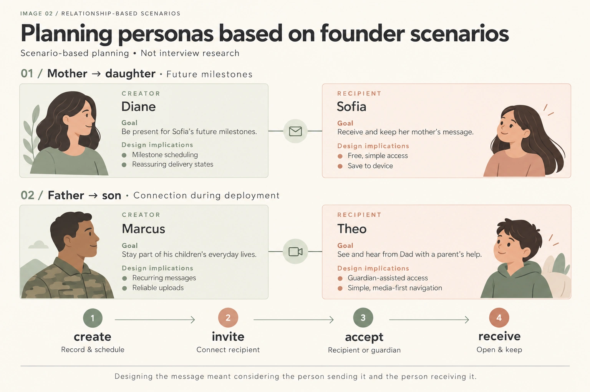
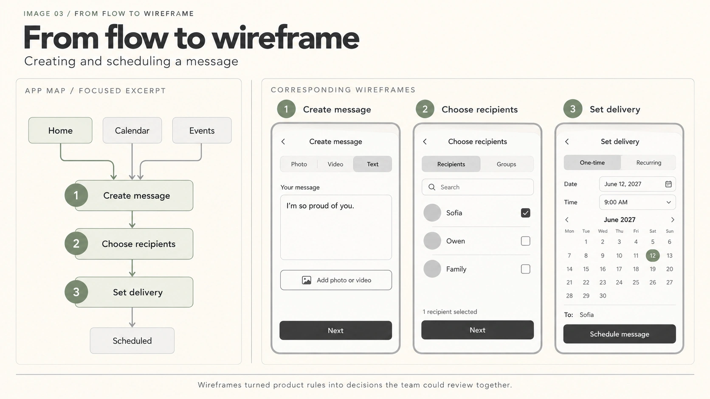
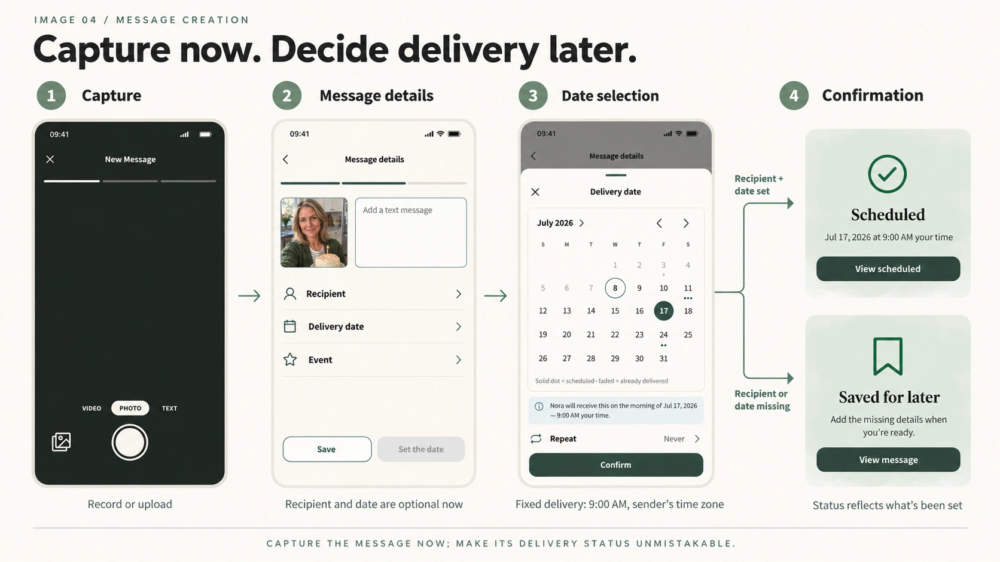
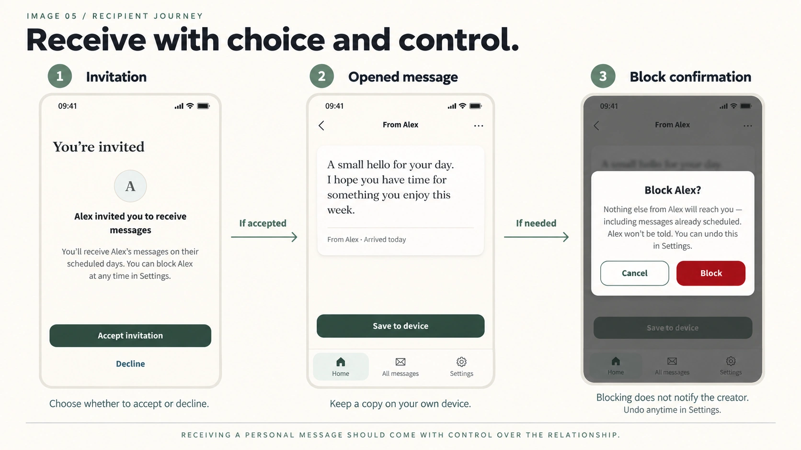
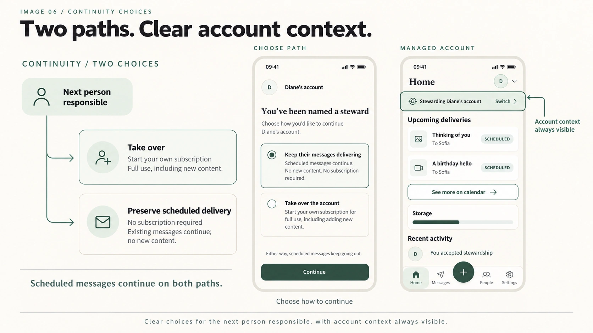
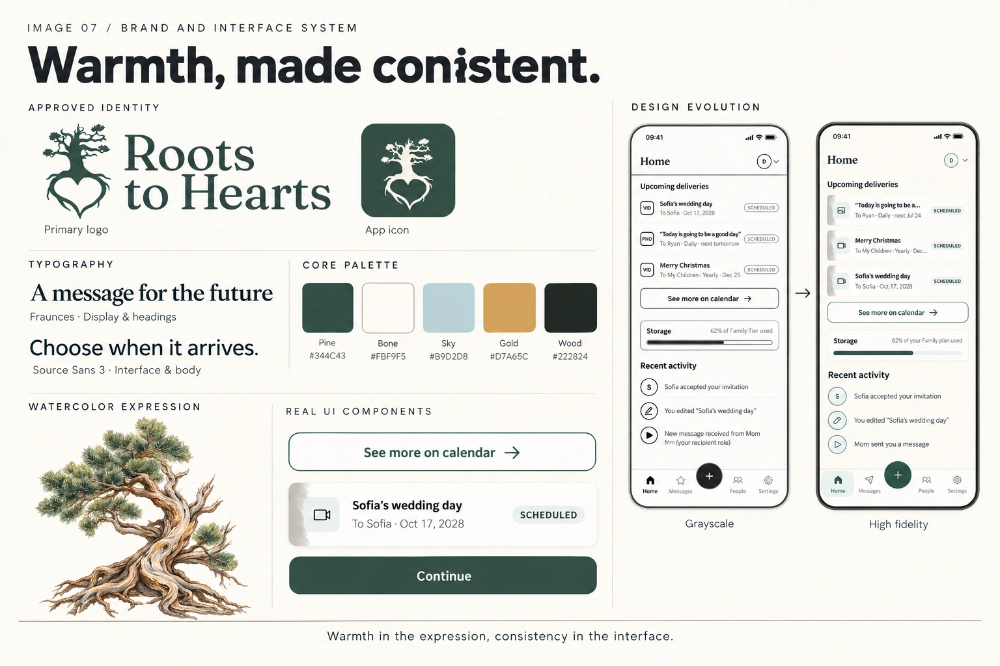
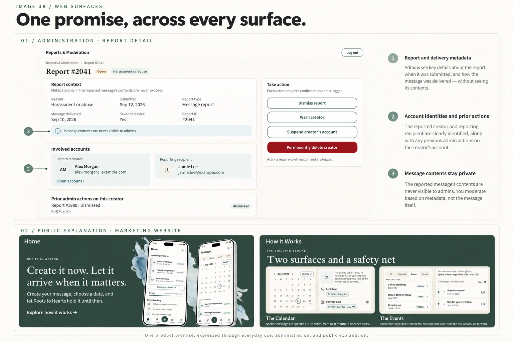
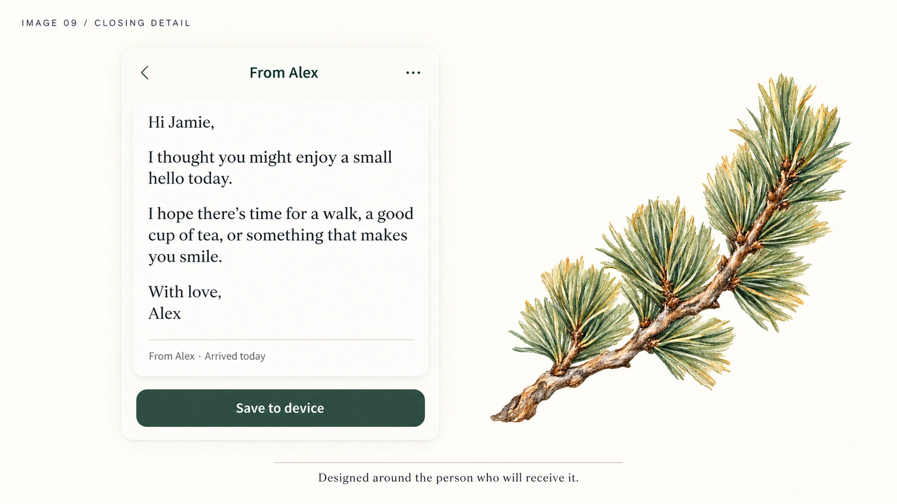

The challenge: making a future promise clear today
A birthday message from a parent. A video for a future wedding. Small memories saved before a child is old enough to receive them.
The product needed to support these different intentions without making every interaction feel like end-of-life planning. It also needed clear answers to less visible questions: What happens if a message has no date? Can someone decline an invitation? Who manages an account when its creator cannot?
My challenge was to translate those questions into an experience that feels personal while making delivery, consent, and responsibility explicit.
Understanding both sides of the message
I began with the founder’s scenarios, the project scope, and stakeholder reviews. I used paired creator and recipient personas to trace the experience from both perspectives, then mapped the flows that connected them.
These were planning personas synthesized from project materials, rather than findings from interviews with end users. They helped frame the design around different circumstances: a parent facing illness, a service member away from home, a parent planning ongoing support, and an expectant parent collecting memories.
Three questions guided the work:
- For the creator: Can I capture something meaningful before deciding exactly when and how to share it?
- For the recipient: Can I receive and keep a message while retaining control over contact?
- For the person taking responsibility later: Can I understand whose account I am managing and what my choices change?


Turning the scope into connected experiences
The work extended beyond a message composer. I mapped the creator’s Calendar, Events, Messages, Recipients, and Groups alongside the recipient experience and the account-continuity flows.
Wireframes made the rules concrete enough to discuss with the founder and developers. Reviews helped expose decisions that a happy-path prototype could hide: saving without scheduling, changing roles, recovering from errors, and explaining what happens when an account is no longer actively managed.
I documented changes and open questions alongside the screens so that an interface decision could be traced to the behavior it required.


Making space to capture first and decide later
Requiring a recipient and delivery date at the moment of creation would make every memory a scheduling task. The designed flow lets someone capture their message first and save it without either.
I distinguished the two outcomes: Message scheduled and Message saved for later. A saved message needs its own explanation because storing something does not guarantee it will be delivered.
Scheduling also became more constrained. The agreed delivery rule uses 9:00 AM in the sender’s account time zone, removing the need for a time picker. That reduces choices, but gives up precise delivery-time control—a trade-off the interface needs to explain.
Events organize messages around meaningful occasions; delivery behavior belongs to each message. Keeping those responsibilities distinct was essential to the flow and its handoff notes.


Giving recipients meaningful control
The recipient experience has a different purpose from the creator experience. It uses a free account and simpler navigation focused on receiving and keeping messages.
I designed the invitation and message flows around the ability to accept, decline, save, block, and report. Blocking is not disclosed to the creator. This privacy rule also affects creator-facing states: they must not reveal why a recipient is unavailable.
That made consent a system-wide design decision. The recipient’s confirmation, the creator’s status labels, and the administrative workflow all had to support the same boundary.


Explaining who takes care of an account next
Account continuity was one of the most demanding parts of the design. A beneficiary—the person nominated to take responsibility—can choose between taking over an account with a subscription or preserving it in Legacy Delivery, where scheduled messages continue without new messages being added.
I worked through these paths across web and mobile, including the role switcher and a persistent banner when someone is managing another person’s account. During the prototype review, the founder specifically recognized the banner’s value in preventing confusion.
The underlying rules distinguish inactivity from payment failure. The design needed to explain a change in account management without implying that an inactive person had died.


A visual identity rooted in care
The brand evolved from the working name My Legacy to Roots to Hearts. The approved direction combines a tree, roots, and heart mark with warm paper surfaces and watercolor imagery.
I refined the logo with its smallest application in mind. A more detailed exploration lost clarity at app-icon size; the approved version preserved the recognizable tree and heart while allowing smaller details to appear at larger sizes.
The design system pairs Fraunces display headings with Source Sans 3 for body text and controls. Pine greens and warm neutrals establish the foundation, while semantic colors distinguish actions, warnings, and outcomes. Shared tokens and components carry that language across the product surfaces.
The founder approved the logo and paper-and-watercolor direction during the September 11 review.


Extending trust beyond the mobile app
The administrative platform had to support account operations without exposing private message contents. I designed report review around available metadata, action confirmations, and recorded outcomes. The handoff also identifies moderation-policy questions that remain unresolved; screens alone cannot settle those decisions.
The marketing website explains the product before someone joins. Its design carries the same visual language into product explanations, support, and account-related pages. A September consistency review checked the desktop pages against the Home design and corrected navigation states that had been copied across pages.


What the work has produced so far
The project has a reviewed mobile high-fidelity prototype, an approved brand direction, a documented design system, and handoff materials covering the mobile, admin, and website experiences. Website desktop designs were also reviewed for consistency in September.
Prototype review led to concrete refinements, including clearer event-editing copy, illustration changes, and repaired prototype connections. These are documented design improvements, rather than evidence of customer or business impact.
At the time of writing, design and handoff remain in progress. Launch results and usability metrics are not available. The next validation priorities are whether people understand the difference between saving and scheduling, can explain the continuity choices, and can recognize which account they are using.
Reflection
The central lesson from this work is that an emotional promise depends on precise interaction details. A saved-message confirmation, a private blocking state, or an account-context banner can matter as much as the main creation flow.
Designing the creator, recipient, and administrator experiences together helped reveal where a choice on one surface changed another. It also reinforced the value of separating an interface proposal from a business decision or an implementation commitment—and carrying those distinctions into handoff.

